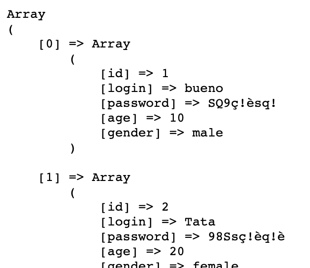

H2 - P2023
Développement web
Cours 29
- github : https://github.com/brunosimon/hetic-p2023
- site : http://bruno-simon.com/hetic/p2023/
- contact : bruno.simon@hetic.net
PHP
Base de données
Qu'est-ce que MySQL ?
- Système de Gestion de Bases de Données Relationnelles (SGBDR)
- Installé sur le serveur
- Utilisable en PHP
- Très répandu
- Inventé par Michael Widenius
(SQL = Structured Query Language / My = ?)
- Une base de données contient des tables
- Ces tables contiennent des lignes
- Ces lignes contiennent des cellules / colonnes
- Ces cellules contiennent des données
Typiquement, nous allons créer une table par type de données (users, articles, products)
L'ID est presque toujours présent dans chaque table
C'est un nombre qui commence à 1 et qui va s'incrémenter automatiquement à chaque nouvelle ligne
Il permet d'identifier de façon unique chaque ligne
Chaque colonne doit être d'un type particulier
Il en existe plusieurs
- TINYINT : Un petit entier
- INT : Un entier
- BIGINT : Un gros entier
- FLOAT : Un nombre à virgule
- DATE : Une date au format YYYY-MM-DD
- DATETIME : Une date au format YYYY-MM-DD HH:MM:SS
- VARCHAR : Un texte court
- TEXT : Un texte long
- BOOLEAN : Un booléen (équivalent au TINYINT)
- ENUM : Un choix parmi une liste
Et encore d'autres
Pour les colonnes de type entier, il faut choisir le type selon les valeurs maximales et minimales qui pourraient être stockées
| TINYINT | de -128 à 127 |
| SMALLINT | de -32.768 à 32.767 |
| MEDIUMINT | de -8.388.608 à 8.388.607 |
| INT | de -2.147.483.648 à 2.147.483.647 |
| BIGINT | de -263 à 263-1 |
Pour les colonnes de type text ou varchar, il faut spécifier l'encodage
L'encodage est important à la fois pour sauvegarder certains caractères, mais aussi pour faire des recherches sur la base de donnée
Les plus utilisés sont :
- utf8_unicode_ci : Permet de sauvegarder la majorité des caractères
-
utf8_general_ci : Permet de sauvegarder la majorité des caractères et ne fait pas la différence entre certains caractères durant une recherche
(é = è = ê = e par exemple)
Aujourd'hui, on utilise de plus en plus utf8mb4_unicode_ci et utf8mb4_general_ci qui permettent de stocker plus de caractères, mais nécessite MySQL 5.5.3 minimum
PhpMyAdmin
- Interface permettant de manipuler les données
- Pas besoin de maîtriser SQL
- Installé avec MAMP
- Existe en plusieurs versions
- Utile pour la maintenance (créer/modifier des bases de données, vérifier/modifier des données, etc.)
MAMP :
WAMP :
- Pour accéder à une base de données MySQL, il faut s'y connecter
- MySQL fonctionne avec des comptes
- Chaque compte possède des droits spécifiques (Ex : créer des tables, créer des colonnes, supprimer des lignes, ...)
- Le compte par défaut, appelé root, possède tous les droits
Comme nous sommes en local, nous allons utiliser le compte root
Il est préférable, une fois en ligne, d'utiliser un compte avec moins de droits
Pour ajouter un compte, dans PhpMyAdmin, allez dans l'onglet Utilisateurs puis cliquez sur Ajouter un utilisateur
Créez votre première base de données dans l'onglet Bases de données
Appellez-la comme vous le voulez et choissez utf8_general_ci (lettres et underscores uniquement)
Rentrez dans la base de données (menu de gauche)
Créez une nouvelle table nommée users avec 5 colonnes
Dans le formulaire qui apparait, chacune des lignes correspond aux colonnes de la base de données. Remplissez-les comme cela :
☝️ Au moment de changer Index en Primary ou de cocher A_I, une popin devrait s'ouvrir, validez la
Essayez :
- Ajouter des lignes
- Les modifier
- Les supprimer
- Rentrer de mauvaises valeurs
(trop de caractères, pas le bon type, etc.) - Explorer les différents onglets
Lorsque l'on utilise PhpMyAdmin, celui-ci effectue des requêtes SQL
Ce sont des requêtes indiquant à la base de donnée quoi faire (ajoute une donnée, supprime cette ligne, créé une colonne, ...)
Nous allons apprendre à effectuer ces requêtes SQL nous-même
SQL
SQL = Structured Query Language
Langage qui permet de communiquer avec la base de données
Nous allons l'utiliser dans PhpMyAdmin, mais par la suite nous l'utiliserons en PHP
Les principales requêtes SQL sont INSERT INTO, UPDATE, DELETE, SELECT
Cliquez sur l'onglet SQL
Un champ de texte devrait s'ouvrir. Celui-ci permet de rentrer des requêtes SQL
Ajouter une ligne
INSERT INTO users (login, password, age, gender) VALUES ('bruno', 'azerty', 27, 'male')
En SQL, les retours à la ligne et l'indentation n'ont pas d'importance
INSERT INTO
users (login, password, age, gender)
VALUES
('bruno', 'azerty', 27, 'male')
☝️ Cochez la case retain query box pour conserver la requête SQL après l'avoir exécutée
Ajouter plusieurs lignes à la table users
INSERT INTO
users (login, password, age, gender)
VALUES
('Toto', 'azerty', 22, 'male'),
('Tata', 'qwerty', 30, 'female')
Modifier la colonne login de la table users quand id vaut 1
UPDATE
users
SET
login = 'bueno'
WHERE
id = 1
Modifier les colonnes login et age de la table users quand id vaut 1
UPDATE
users
SET
login = 'bueno',
age = 29
WHERE
id = 1
Modifier la colonne login de la table users quand id vaut 1 ou 2
UPDATE
users
SET
login = 'bueno'
WHERE
id = 1 OR id = 2
Récupérer les colonnes id et login de toute la table users
SELECT id, login FROM users
Récupérer toutes les colonnes de toute la table users
SELECT * FROM users
Récupérer toutes les colonnes de la table users quand id est inférieur à 3
SELECT * FROM users WHERE id < 3
Supprimer la ligne de la table users quand id vaut 1
DELETE FROM users WHERE id = 1
Supprimer toutes les lignes de la table users ⚠️
DELETE FROM users
- Les chaînes de caractères doivent être entre guillemets (simples ou doubles)
- Les commandes (SELECT, WHERE, FROM, ...) n'ont pas besoin d'être en majuscules
- Si la colonne ou la table possèdent un nom composé de caractères spéciaux (à éviter), on peut utiliser des back quotes `
En PHP
Nous devons tout d'abord nous connecter à la BDD
Pour cela, nous allons utiliser PDO
Avec PDO
$pdo = new PDO('mysql:host=localhost;dbname=hetic_p2023_first;port=8889', 'root', 'root');
$pdo = new PDO('mysql:host=localhost;dbname=hetic_p2023_first;port=8889', 'root', 'root');
- localhost : Serveur (en général localhost, parfois une IP)
- hetic_p2023_first : Nom de la table
- 8889 : Port
- root : Login
- root : Mot de passe (root ou rien)
☝️ La majorité de ces informations peuvent être trouvées en ouvrant la BDD dans PhpMyAdmin
Il existe d'autres façons de se connecter à MySQL depuis PHP (mysql_connect, mysqli_connect), mais ces techniques sont moins pratiques et moins sécurisées
Pour plus de lisibilité et de maintenabilité, il est intéressant de mettre les variables dans des constantes globales avec define
// Connexion variables
define('DB_HOST', 'localhost');
define('DB_PORT', '8889');
define('DB_NAME', 'hetic_p2023_first');
define('DB_USER', 'root');
define('DB_PASS', 'root');
$pdo = new PDO('mysql:host='.DB_HOST.';dbname='.DB_NAME.';port='.DB_PORT, DB_USER, DB_PASS);
// Delete next line if working
echo 'Connected';
⚠️
Par défaut, PDO n'affiche pas les erreurs SQL
Ajoutez la ligne suivante après avoir instancié PDO pour afficher les erreurs
$pdo->setAttribute(PDO::ATTR_ERRMODE, PDO::ERRMODE_EXCEPTION);
Nous avons donc maintenant une variable $pdo qui gère la connexion à la base de données
C'est un objet qui possède plusieurs méthodes permettant d'intéragir avec la base de données
Cette variable aurait pu s'appeler autrement
($db, $connect, ...)
Récupérer des données avec query()
La méthode query() permet d'exécuter une requête SQL et de renvoyer les résultats
$query = $pdo->query('SELECT * FROM users');
☝️ $query ne contient pas directement les résultats
$query est un objet contenant deux méthodes qui nous intéressent :
- fetchAll() : renvoie un tableau de toutes les lignes
- fetch() : renvoie chaque ligne une par une
Avec fetchAll()
// Préparation de la requête
$query = $pdo->query('SELECT * FROM users');
// Exécution de la requête et récupération des données
$users = $query->fetchAll();
// Affichage des données
echo '<pre>';
print_r($users);
echo '</pre>';
Avec fetch()
// Préparation de la requête
$query = $pdo->query('SELECT * FROM users');
$user1 = $query->fetch();
$user2 = $query->fetch();
$user3 = $query->fetch();
On utilise en général fetch() lorsqu'on n'attend qu'un seul résultat
Par défaut, PDO renvoie un tableau dans un format étrange (indéxé ET associatif)

Pour indiquer à PDO de renvoyer des tableaux associatifs uniquement, ajoutez la commande suivante après avoir initialisé PDO
$pdo->setAttribute(PDO::ATTR_DEFAULT_FETCH_MODE, PDO::FETCH_ASSOC);

Pour indiquer à PDO de renvoyer des objets
$pdo->setAttribute(PDO::ATTR_DEFAULT_FETCH_MODE, PDO::FETCH_OBJ);
☝️ Il n'y a pas de grande différence entre des tableaux associatifs et des objets, mais, dans le cadre du cours, nous allons utiliser des objets
Modifier, supprimer et ajouter des données avec exec()
La méthode exec() exécute une requête SQL et renvoie le nombre de lignes affectées
Avant d'écrire une requête SQL dans exec() il est conseillé de la tester directement dans PhpMyAdmin
En PHP, essayez les requêtes suivantes
// Ajoute une ligne dans la table users
$exec = $pdo->exec('INSERT INTO users (login, password, age, gender) VALUES (\'bueno\', \'azerty\', 27, \'male\')');
echo '<pre>';
var_dump($exec);
echo '</pre>';
// Met à jour une ligne dans la table users
$exec = $pdo->exec('UPDATE users SET login = \'toto\' WHERE id = 2');
echo '<pre>';
var_dump($exec);
echo '</pre>';
// Supprimer des lignes de la table users
$exec = $pdo->exec('DELETE FROM users WHERE age > 30');
echo '<pre>';
var_dump($exec);
echo '</pre>';
Si la requête s'est bien exécutée, elle renvoie le nombre de ligne affectées
Si la requête a échoué, elle renvoie false
Les requêtes SQL deviennent vite trop compliquées comme ci-dessous
$exec = $pdo->exec('INSERT INTO users (login, password, age, gender) VALUES (\''.$data['login'].'\', \''.$data['password'].'\', '.$data['age'].', \''.$data['gender'].'\')');
Le mélange PHP/SQL rend trop difficile la distinction des différents éléments dans la requête SQL
La solution : PDO Prepare
// Les données qu'on veut insérerer
$login = 'Tommy';
$password = 'azerty';
$age = 30;
$gender = 'male';
// Préparation de la requête
$prepare = $pdo->prepare('INSERT INTO users (login, password, age, gender) VALUES (:login, :password, :age, :gender)');
// Remplacement des tags par les valeurs
$prepare->bindValue(':login', $login);
$prepare->bindValue(':password', $password);
$prepare->bindValue(':age', $age);
$prepare->bindValue(':gender', $gender);
// Exécution de la requête
$execute = $prepare->execute();
Ce n'est pas plus rapide à écrire, mais c'est beaucoup plus clair et maintenable
$prepare = $pdo->prepare('INSERT INTO users (login, password, age, gender) VALUES (:login, :password, :age, :gender)');
/* ... */
La méthode prepare() prépare la requête SQL
Les différentes valeurs sont remplacées par des identifiants avec le signe : devant
/* ... */
$prepare->bindValue(':login', $login);
$prepare->bindValue(':password', $password);
$prepare->bindValue(':age', $age);
$prepare->bindValue(':gender', $gender);
/* ... */
La méthode bindValue() sur l'objet renvoyé par prepare() permet d'assigner les valeurs à chaque identifiant
/* ... */
$execute = $prepare->execute();
Il ne reste plus qu'à exécuter la requête avec la méthode execute() sur l'objet renvoyé par prepare()
L'object renvoyé par execute() fonctionne comme l'objet renvoyé par exec() ou par query()
Il est possible de binder les valeurs directement dans le execute() en lui passant un tableau associatif
- Les clés du tableau doivent correspondre aux identifiants dans la requête
- Il ne doit pas y avoir d'autres clés
// Les données qu'on veut insérer
$data = [
'login' => 'Tommy',
'password' => 'azerty',
'age' => 30,
'gender' => 'male',
];
// Préparation de la requête
$prepare = $pdo->prepare('INSERT INTO users (login, password, age, gender) VALUES (:login, :password, :age, :gender)');
// Execution de la requête en injectant directement les données
$execute = $prepare->execute($data);